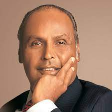

ABOUT
Reaching your goals becomes an attainable journey when you embark on it through "Grow Goals." Our mission is to inspire, empower, and guide you on your path to personal growth and achievement. With a wealth of motivational content and resources, we aim to be your trusted companion on this remarkable voyage. At "Grow Goals," we firmly believe that your dreams are within reach, and we're here to provide the tools and inspiration you need to make them a reality. The founder of "Grow Goals" is Harshan Manga, a dedicated individual committed to helping you unlock your full potential and turn your aspirations into accomplishments.
Certainly, here's the revised paragraph:
"At 'Grow Goals,' we're dedicated to fueling your journey towards success. Our platform is your source for inspirational stories, powerful success narratives, uplifting videos, and motivating images. We understand the power of real-life success stories to inspire and encourage, and we're committed to curating a collection of these stories that will resonate with you on your personal growth path. Our motivational videos and images are carefully selected to provide you with the daily dose of inspiration you need to stay focused and keep pushing forward. Join us as we harness the collective wisdom of these resources to empower you on your quest for greatness, brought to you by Harshan Manga, the founder of 'Grow Goals.'"
JK Rowling
Dhirubhai Ambani

Steven Spielberg
- JK ROWLING BIOGRAPHY
Rowling was born on 31st July 1965 at Yate General Hospital near Bristol, and grew up in Gloucestershire in England and in Chepstow, Gwent, in south-east Wales.
Her father, Peter, was an aircraft engineer at the Rolls Royce factory in Bristol and her mother, Anne, was a science technician in the Chemistry department at Wyedean Comprehensive, where Jo herself went to school. Anne was diagnosed with multiple sclerosis when Jo was a teenager and died in 1990, before the Harry Potter books were published. Jo also has a younger sister
- Honours&rewards
J.K. Rowling has received many honours and awards, including:
Companion of Honour, for services to literature and philanthropy, 2017
PEN America Literary Service Award, 2016
Freedom of the City of London, 2012
Hans Christian Andersen Award, Denmark, 2010
Chevalier de la Legion d’Honneur: France, 2009
Lifetime Achievement Award, British Book Awards, 2008
South Bank Show Award for Outstanding Achievement, 2008
James Joyce Award, University College Dublin, 2008
The Edinburgh Award, 2008
Commencement Day Speaker, Harvard University, USA, 2008
Blue Peter Gold Badge, 2007
WH Smith Fiction Award, 2004
Prince of Asturias Award for Concord, Spain, 2003
Order of the British Empire (OBE), 2001
Children’s Book of the Year, British Book Awards, 1998 and 1999
Booksellers Association Author of the Year, 1998 and 1999
- DHIRUBHAI AMBANIBIOGRAPHY
Dhirajlal Hirachand Ambani (28 December 1932 – 6 July 2002) was an Indian businessman who founded Reliance Industries in 1958. Ambani took Reliance public in 1977.[1][2] In 2016, he was honoured posthumously with the Padma Vibhushan, India's second-highest civilian honour for his contributions to trade and industry.[3][4] Ambani faced numerous accusations of market manipulation, tax evasion, and cronyism
- AMBANI IS AMBANI
At 16, Dhirubhai Ambani moved to Yemen to work at a petrol pump as he belonged to a low-income family. After some time, he started a textile business and gained much marketing knowledge. After that, he began Reliance Corporation in 1996, now known as Reliance Industries, which is very famous nowadays.
- STEPHEN SPIELBERG BIOGRAPHY
Spielberg was born in Cincinnati, Ohio, and grew up in Phoenix, Arizona.[4] He moved to California and studied film in college. After directing several episodes for television, including Night Gallery and Columbo, he directed the television film Duel (1971), which later received an international theatrical release. He made his theatrical film debut with The Sugarland Express (1974) and became a household name with the 1975 summer blockbuster Jaws. He then directed huge box office successes Close Encounters of the Third Kind (1977), E.T. the Extra-Terrestrial (1982), and the Indiana Jones original trilogy (1981–89). He subsequently explored drama in The Color Purple (1985) and Empire of the Sun (1987).
- stephen spielberg
He is one of the famous filmmakers who created Jurassic Park. However, he was rejected by the USC School of Theater due to his bad grades. But even after facing these issues, he made some of the best films in the industry, which all loved to see. He is now one of the school’s board of directors.
In conclusion, the world has no shortage of inspiring and remarkable personalities. Each has made significant contributions to their respective fields and continues to leave a lasting impression on those who follow in their footsteps. No matter their background or calling, these inspiring personalities show that anything is possible if you’re willing to work hard and believe in yourself.